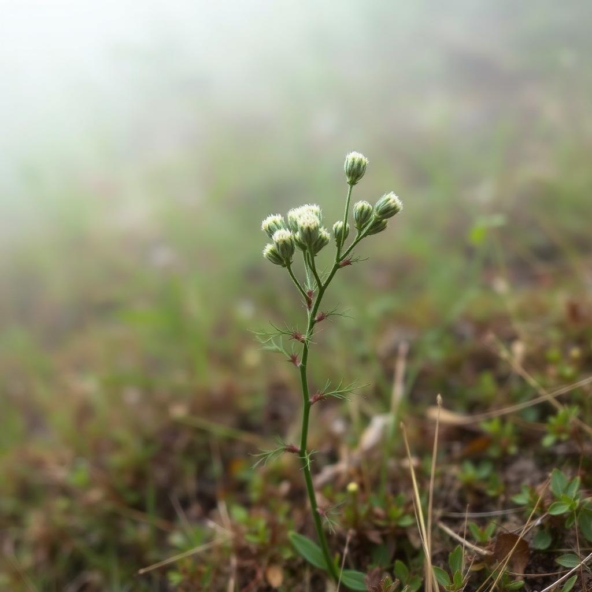

Flora
Azevinhos, teixos e outras espécies ameaçadas encontram no arboreto um refúgio de esperança.
Sobre o tema
O arboreto desempenha um papel fundamental na conservação de espécies ameaçadas. Alberga diversas espécies de flora e fauna em risco, incluindo plantas endémicas portuguesas como o azevinho (Ilex aquifolium) e o teixo (Taxus baccata).
Através de programas de reprodução e preservação de habitat, o arboreto contribui ativamente para a proteção da biodiversidade e para a sensibilização do público sobre a importância da conservação das espécies em perigo de extinção.

Galeria
Espécies em vias de extinção presentes no arboreto.
2 fotografias